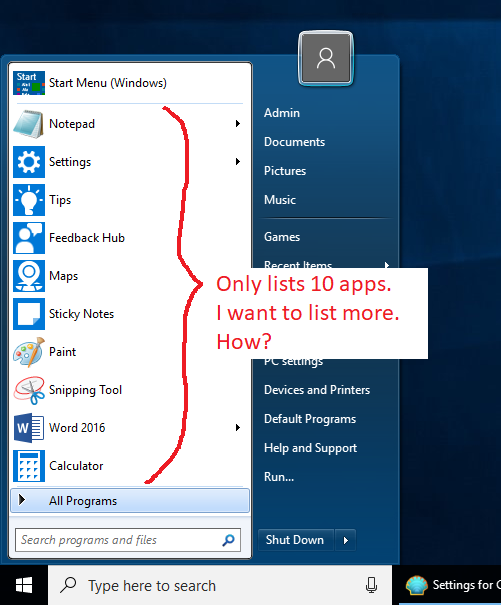

I want to change the number of applications displayed in the start menu, as illustrated as follows:

This config is available in Windows 7 in the taskbar settings so I think it should also be configurable in settings dialog. I searched all configs in the settings dialog, the only place I think relevant is Main Menu -> Enable jumplists -> Max items in jumplists. I changed it to 20 but does not work. So, what do I do to set the number of displayed applications in the start menu to be more than 10? Thank you.
|